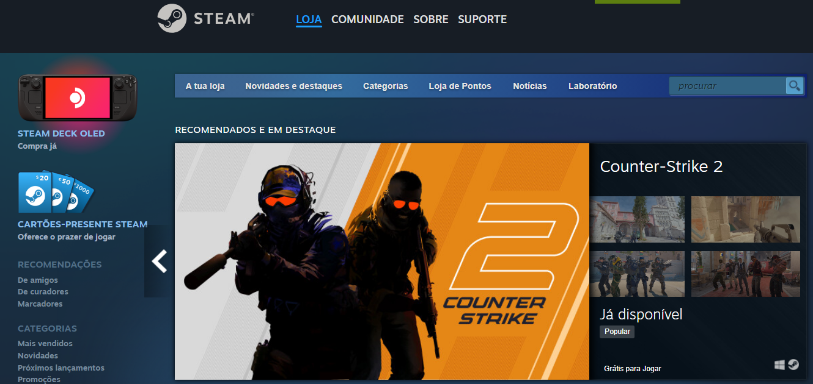

O que é a Steam?
A Steam é uma plataforma de distribuição digital desenvolvida pela Valve Corporation, uma empresa de videogames. Lançada em 2003, a Steam é amplamente utilizada por jogadores de PC para comprar, baixar e jogar jogos eletrônicos. A plataforma oferece uma ampla variedade de títulos, desde jogos independentes até grandes produções de estúdios renomados.
Que papel desempenha?
Além de servir como uma loja virtual para jogos, a Steam também fornece recursos adicionais, como multiplayer online, atualizações automáticas de jogos, streaming de jogos e comunidades online. Através da Steam, os jogadores podem criar perfis, interagir com amigos, participar de fóruns de discussão e até mesmo transmitir suas sessões de jogo ao vivo.
Quem criou a Steam?
A Steam foi criada pela Valve Corporation, uma empresa de desenvolvimento de jogos e tecnologia, sediada nos Estados Unidos. A Valve foi fundada por Gabe Newell e Mike Harrington em 1996. A ideia por trás da Steam era fornecer uma plataforma digital para distribuição de jogos, atualizações automáticas e outros serviços relacionados a jogos.